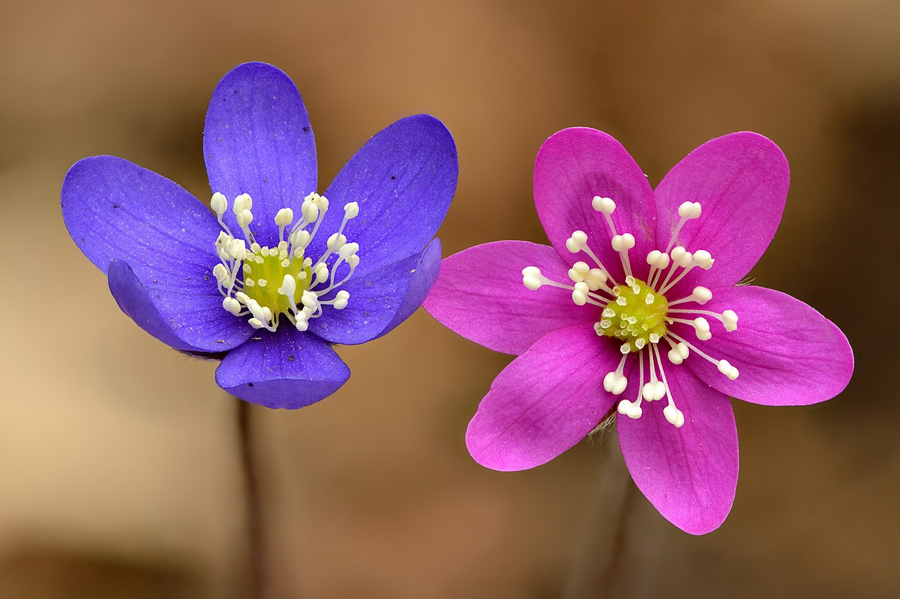

simran-Mikylla
We are flowers!!! I like to smell flowers, I like to eat them and i like to give my mother some flowers.  i like flowers very much, the smell of flowers like: rose,etc.is very good, i also give flowers to my family and friends. there are many types of flowers. Istituto montale
Istituto montale